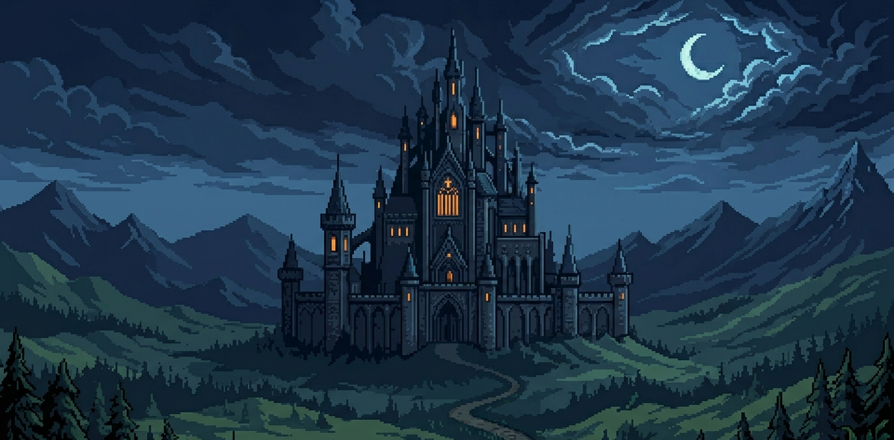
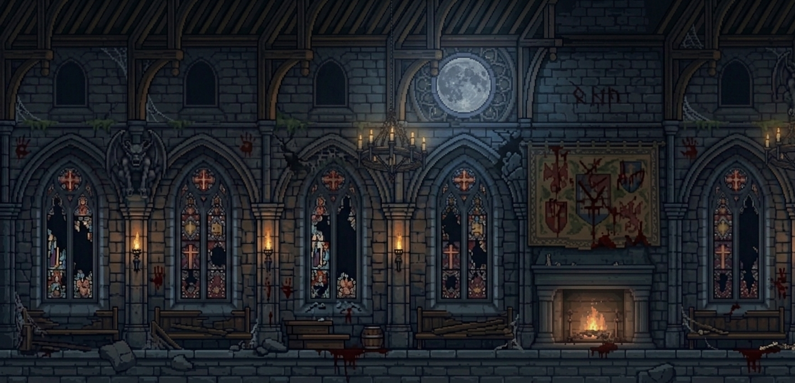
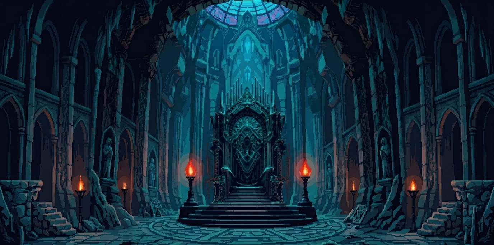

História
Em meados do ano de 1300, enquanto a Europa sucumbia a Peste Negra, uma sombra
ainda mais antiga e devastadora despertava nas profundezas do Norte. No coração de
Valthorgard, uma região esquecida, cercada por montanhas colossais e florestas onde o sol
nunca ousou tocar o solo, o mal não vinha apenas através de doenças, mas sim de um
pacto de sangue. Malakor, um lorde feudal consumido pelo medo da morte, vendeu sua
alma para escapar do fim inevitável, libertando um espírito maligno aprisionado há milênios
em uma relíquia profana. A possessão foi imediata: o espírito tomou o corpo do lorde,
transformando-o no Déspota, um Vampiro maligno.
Com o poder sobrenatural de corromper a própria natureza, Malakor espalhou a dor por
Valthorgard, construindo um exército sombrio, transformando camponeses mortos em
Skeletons sem alma, domando bestas brutais como Minotauros e Lobisomens, e
alimentando-os com o sangue dos inocentes que ali viviam. Como ato final para instaurar
seu império das trevas, o Vampiro tomou para si o Castelo de Malphas, a fortaleza
ancestral que por gerações pertenceu à nobre família von Aethelgard.
A última esperança de Valthorgard repousa sobre os ombros de Alaric von Aethelgard e seu
irmão Erik von Aethelgard. Naquela noite trágica, em que Malakor tomou o reino, os irmãos
foram separados pelo destino para que a esperança pudessem sobreviver às garras
sombrias e um dia retomarem o castelo.
Alaric, o primogênito da linhagem, seguiu o caminho do aço. Criado sob o rigor das
montanhas, ele se tornou o herdeiro da força física de seu pai, Mordor. Portando o Escudo
de Aethelgard e a espada Lamento do Norte, Alaric se tornou um guerreiro imbatível e um
guardião inabalável.
Erik, o mais jovem, foi enviado para os santuários ocultos dos antigos bruxos, guardiões dos
segredos de seu tataravô (o maior dos bruxos, responsável por selar o mal que possuía
Malakor). Lá, Erik despertou o dom adormecido em seu sangue: a capacidade de domar o
Fogo. Através de anos de treinamento místico, ele aprendeu a converter sua energia vital
em chamas, capazes de incinerar a carne morta das legiões de Malakor.
Após anos de exílio e provações, os irmãos finalmente se reuniram nos limites da Floresta
dos Lamentos. O guerreiro e o bruxo agora marcham como um único ser: Alaric é o escudo
que protege, e Erik é a chama que consome. Juntos, eles representam a totalidade do
poder dos von Aethelgard, prontos para retomar o castelo e restaurar, enfim, a paz às terras
de Valthorgard.
Fases do jogo

O Caminho sob a Lua
- Cenário: Alaric e Erik iniciam sua jornada em uma floresta sombria e densa, sob o olhar opressor de uma lua cheia colossal que inunda o céu com uma luz azul intensa. Ao longe, erguendo-se majestoso e aterrorizante está o Castelo de Malphas, uma silhueta gótica maciça que parece tocar as nuvens fragmentadas. A paleta de cores é dominada pelo profundo da noite.
- Inimigos: Esqueletos com espadas, além dos terríveis Lobisomens.

As Entranhas do Castelo de Malphas
- Cenário: Nesta etapa os irmãos adentram as profundezas do Castelo de Malphas, um ambiente opressivo em ruínas e carregado de mistério. Entre vitrais estilhaçados e imponentes arcos de pedra, o cenário é marcado por vestígios sangrentos que criam uma atmosfera de puro suspense, desafiando a coragem de quem ousa explorar o coração desta fortaleza das trevas.
- Inimigos: Esqueletos arqueiros e Minotauros fortes e imponentes.

O Confronto Final
- Cenário: Um salão gótico majestoso. A luz lunar azulada entra por uma janela ao topo, iluminando o trono do Vampiro, enquanto dois candelabros irradiam uma luz vermelha que banha a arena do duelo final. Finalmente Alaric e Erik estão frente a frente com Malakor e terão enfim a chance de concretizar a vingança e restaurar a paz. Será que nossos guerreiros estão prontos para o confronto final?
- Inimigo: Malakor, o Déspota. Malakor se movimenta rapidamente no cenário, e os seus golpes são vorazes e muito danosos.